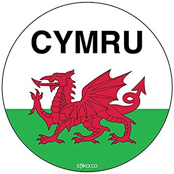

| England is a country that is part of the United Kingdom. It shares land borders with Scotland to the north and Wales to the west. The Irish Sea lies northwest of England and the Celtic Sea lies to the southwest. England is separated from continental Europe by the North Sea to the east and the English Channel to the south. The country covers five-eighths of the island of Great Britain (which lies in the North Atlantic) and includes over 100 smaller islands such as the Isles of Scilly, and the Isle of Wight. |
|---|
| Main Page |
England |
Scotland |
Northern-Ireland |
|---|
 Wales is a country that is part of the United Kingdom and the island of Great Britain. It is bordered by England to the east, the Irish Sea to the north and west, and the Bristol Channel to the south. It had a population in 2011 of 3,063,456 and has a total area of 20,779 km2 (8,023 sq mi). Wales has over 1,680 miles (2,700 km) of coastline and is largely mountainous, with its higher peaks in the north and central areas, including Snowdon (Yr Wyddfa), its highest summit. The country lies within the north temperate zone and has a changeable, maritime climate. Welsh national identity emerged among the Celtic Britons after the Roman withdrawal from Britain in the 5th century, and Wales is regarded as one of the modern Celtic nations. Llywelyn ap Gruffudd's death in 1282 marked the completion of Edward I of England's conquest of Wales, though Owain Glyndŵr briefly restored independence to Wales in the early 15th century. The whole of Wales was annexed by England and incorporated within the English legal system under the Laws in Wales Acts 1535–1542. Distinctive Welsh politics developed in the 19th century. Welsh Liberalism, exemplified in the early 20th century by Lloyd George, was displaced by the growth of socialism and the Labour Party. Welsh national feeling grew over the century; Plaid Cymru was formed in 1925 and the Welsh Language Society in 1962. Established under the Government of Wales Act 1998, the National Assembly for Wales holds responsibility for a range of devolved policy matters.
| Fun Facts |
|---|
| Wales is called Cymru in Welsh. |
| English and Welsh are the two official languages of Wales. Welsh is a Celtic based language that has seen a resurgence in recent times and is now spoken by over 20% of the population. |
| The country of Wales is said to contain more castles per square mile than any other country in the world. |
| Cardiff's Millennium Stadium has the largest retractable roof of any sports stadium in the world. |
| Cardiff is the largest city and also the capital of Wales. |